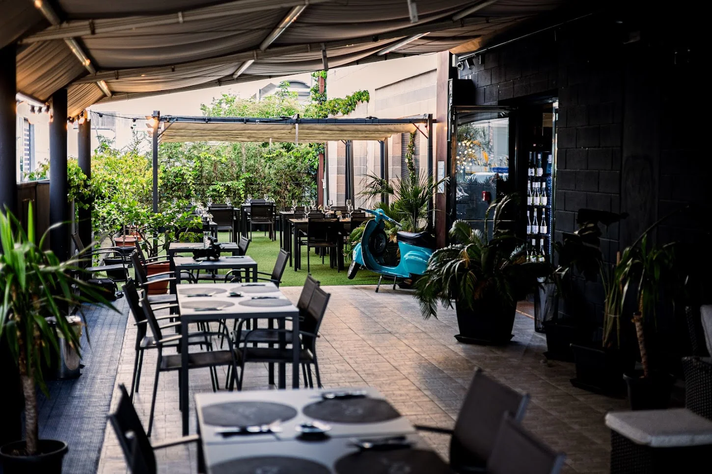

La contemporanea
Cornicione alto, centro sottile. La base casertana di Pasquale per le pizze di stagione.

La contemporanea di Pasquale, i fritti della sua terra e un tavolo tra le piante.
Una tonda dal bordo alto, una pala sottile o un padellino da dividere.
Esplora il menuCornicione alto, centro sottile. La base casertana di Pasquale per le pizze di stagione.

Morbido all’interno, croccante fuori. Arriva a spicchi, da passare al centro del tavolo.

Bassa e croccante, condita dopo la cottura. Ogni trancio lascia spazio a un abbinamento diverso.
Nel 2020 Giulia Rogoli e Pasquale Caianiello aprono la prima Pizzamore a Lancenigo. Oggi, in via Roma, Pasquale porta a tavola la pizza che conosce da Caserta.
Le alici arrivano fresche, le creme si preparano in cucina e la carta segue quello che offre la stagione.
Sfoglia la cartaVia Roma 145/A, Villorba (TV)